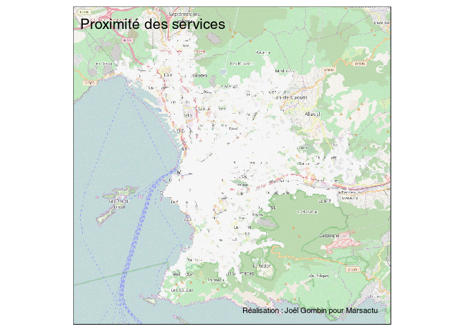
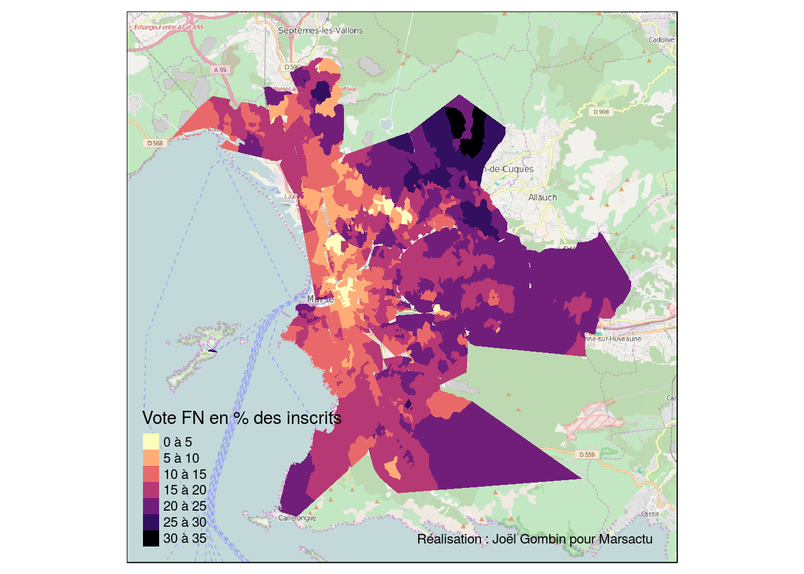
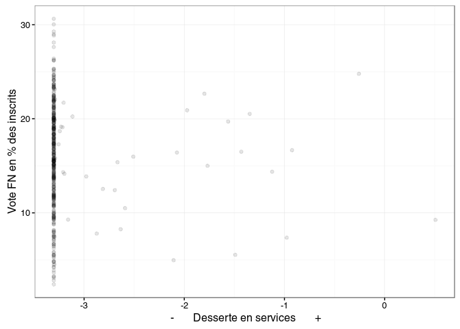

Jérôme Fourquet, de l’IFOP, a publié récemment une note tendant à démontrer qu’en milieu rural, l’absence de commerces et de services, publics ou privés, favorise le vote FN. Elle a, à juste titre, rencontré un certain écho (voir par exemple cette chronique). Les résultats en sont assez fascinants : ainsi, à taille de commune égale, celles qui ont un bureau de poste votent en moyenne 3,4 % points en moins pour le FN… Certains ont toutefois souligné que la question de la désertification commerciale, voire de la fermeture de services publics, se pose également dans les centres-villes. Y retrouverait-on la même logique ? Cela permettrait-il d’expliquer un vote FN élevé dans certains centres-villes de la région, à l’instar de Marseille ?
Pour le vérifier, j’ai regardé ce qu’il en est à Marseille. J’ai essayé de répliquer autant que possible le travail de Jérôme Fourquet, qui s’appuie sur 9 services et commerces : les bureaux de poste, les épiceries, les banques, les restaurants, les pharmacies, les médecins généralistes, les boucheries, les boulangeries et les relais de poste chez un commerçant. Cependant, il n’a pas été possible de répliquer à l’identique : là où Fourquet regarde si ces services sont présents ou pas dans une commune, dans le cas de Marseille, j’ai besoin de savoir précisément où ils sont situés. Je prends ainsi en compte la distance de chaque électeur à chaque service. De ce fait, je n’ai pas pu prendre en compte les banques ni les restaurants. J’ai aussi choisi de ne pas prendre en compte les relais de poste : ils ne remplissent pas la même fonction à la campagne et en ville. Cependant, on va le voir, cela ne nuit guère à la démonstration.
Sur la base des six services retenus, j’ai calculé pour chaque adresse marseillaise un score d’accessibilité aux services.
La carte ci-dessous montre la répartition de cet indice (plus il est rouge, mieux on est desservi en services et commerces). On identifie très bien l’oposition entre le centre-ville et la périphérie de la ville.

Et cette carte n’est pas sans rappeler celle du vote FN, par exemple au premier tour des dernières élections régionales.

De fait, si on compare, bureau de vote par bureau de vote, degré d’accessibilité des services et vote FN, on constate que la corrélation est très nette. Dans les bureaux les moins biens desservis, le vote FN s’établit en moyenne autour de 20 % des inscrits ; dans les bureaux les mieux desservis, il passe en-dessous de 10 %. Ce n’est bien sûr pas le seul facteur qui joue, et on observe donc des variations, mais la relation est très nette.

On pourrait toutefois penser qu’il ne s’agit là que d’un effet d’optique, dû à la composition sociale des bureaux de vote : les bureaux de vote les plus aisés seraient aussi, tendanciellement, les mieux desservis, et dès lors la corrélation entre vote FN et desserte cacherait l’effet de la composition sociale de la population. En fait, il n’en est rien. D’abord parce que la corrélation entre la desserte en services d’un quartier et sa composition sociale est en réalité très faible, voire nulle. Ensuite parce que lorsque l’on construit un modèle statistique (modèle de régression) prenant en compte aussi bien la composition socioprofessionnelle de la population que la desserte en services et commerces, l’effet de cette dernière demeure très important – globalement d’une importance du même ordre de grandeur que l’effet de la composition sociale.
Peut-on dire que la desserte en services est une cause du vote FN ? Il faut sans doute rester prudent. Il est en effet possible que les électeurs FN choisissent, plus que d’autres, de s’installer dans des quartiers dans lesquels la desserte est faible, par exemple parce qu’ils préfèrent un habitat dispersé, peu dense, qui assure une plus grande tranquillité mais est peu propice à l’installation de ces services et commerces. Il est également possible d’imaginer que les électeurs FN soient de moins bons clients que d’autres, et que dès lors là où ils sont surreprésentés ces services auraient plus de mal à se maintenir. Mais il reste que, compte tenu de l’ampleur des effets observés, le lien entre vote FN et desserte en services et commerces du quotidien semble bien attesté. Ce n’est donc pas que dans les mondes ruraux que ce lien existe; au cœur même d’une grande ville comme Marseille, on l’observe également. Contre Ravier, des épiciers ?
Comme d’habitude, le code et les données de cette chronique sont disponibles sur Github.